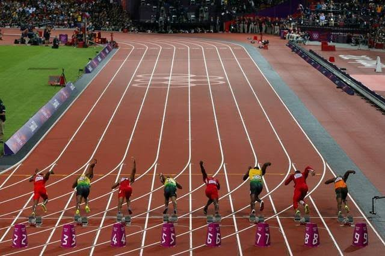

Pengertian & Sejarah Olahraga Lari
Olahraga lari merupakan salah satu cabang olahraga tertua di dunia yang tergolong ke dalam kategori atletik. Lari adalah gerakan memindahkan tubuh dari satu titik ke titik lain secara cepat dengan posisi kedua kaki sempat melayang di udara secara bergantian.
Sejarah lari sudah dimulai sejak zaman Yunani Kuno, yaitu sekitar tahun 776 Sebelum Masehi. Pada awalnya, lari menjadi bagian dari Olimpiade Kuno yang diselenggarakan sebagai wujud penghormatan kepada dewa-dewa Yunani. Seiring berjalannya waktu, olahraga lari terus berkembang pesat hingga menjadi olahraga populer dan dikompetisikan secara global seperti sekarang.

.jpg)
Manfaat & Keunggulan Olahraga Lari
Lari memiliki banyak keunggulan dibandingkan olahraga lainnya karena sangat mudah dilakukan tanpa memerlukan peralatan mahal. Cukup dengan sepatu lari yang nyaman, siapa saja bisa memulai aktivitas fisik ini di mana saja dan kapan saja.
Berikut adalah beberapa manfaat utama melakukan olahraga lari secara rutin bagi kesehatan tubuh dan mental:
- Meningkatkan stamina dan kesehatan jantung (kardiovaskular).
- Membantu menurunkan berat badan serta membakar kalori secara efektif.
- Mengurangi stres dan meningkatkan suasana hati.
- Meningkatkan kualitas tidur di malam hari.
.jpg)
Tabel Rekomendasi Peralatan Lari Dasar
| No | Peralatan | Fungsi Utama | Tingkat Kebutuhan |
|---|---|---|---|
| 1 | Sepatu Lari (Running Shoes) | Melindungi kaki dan meredam benturan | Wajib |
| 2 | Pakaian Olahraga Breathable | Menyerap keringat dan menjaga sirkulasi udara | Wajib |
| 3 | Smartwatch / Fitness Tracker | Merekam jarak, waktu, dan detak jantung | Opsional |
Tips & Langkah Memulai Bagi Pemula
Bagi Anda yang baru ingin memulai kebiasaan berlari, penting untuk melakukannya secara bertahap agar terhindar dari cedera. Konsistensi jauh lebih penting daripada kecepatan saat pertama kali memulai.
- Lakukan pemanasan statis dan dinamis selama 5–10 menit.
- Gunakan metode lari-jalan (run-walk method).
- Atur pola napas dan jagalah ritme langkah yang teratur.
- Lakukan pendinginan dan peregangan otot setelah selesai berlari.
.jpg)